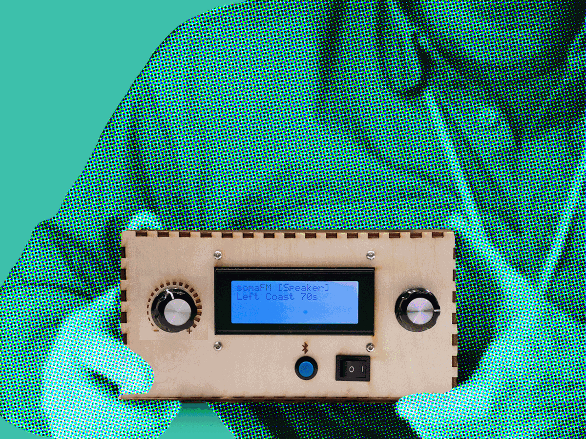
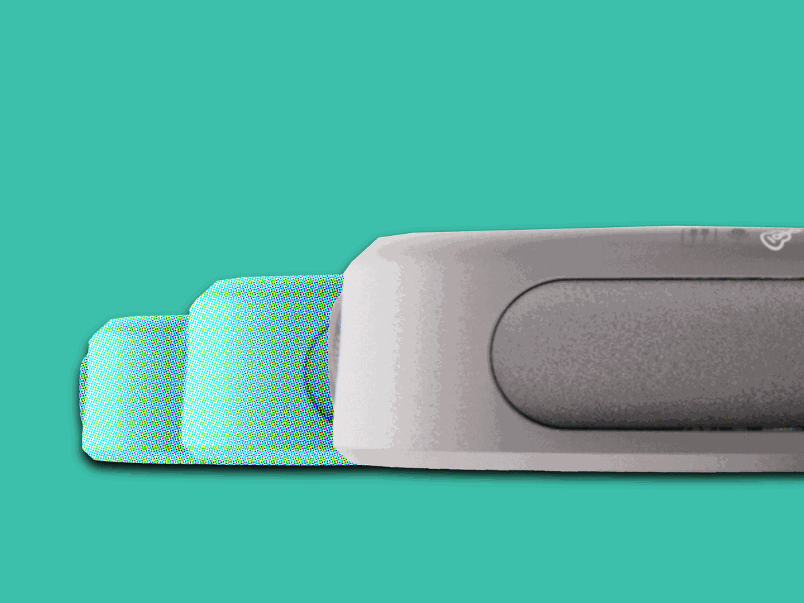
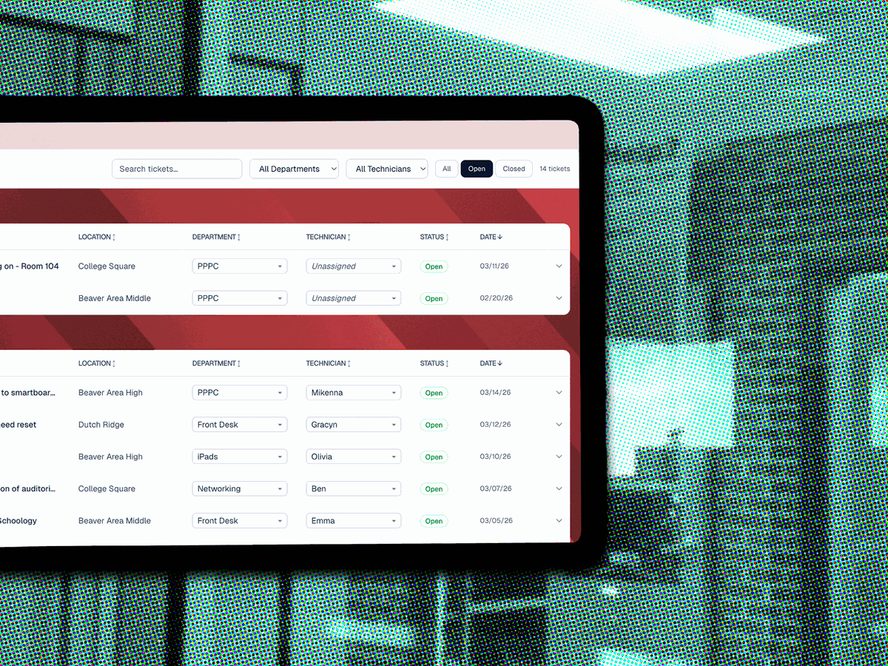
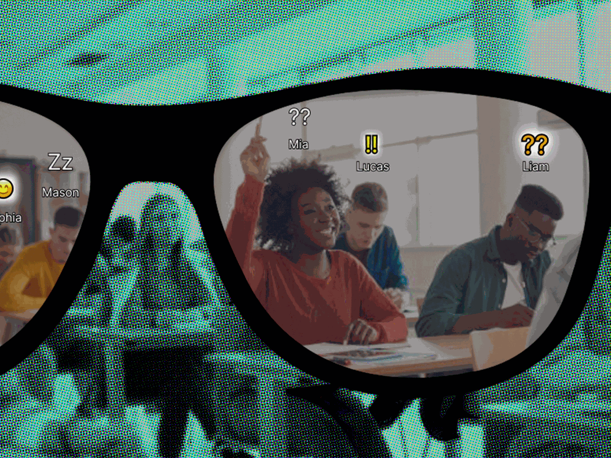
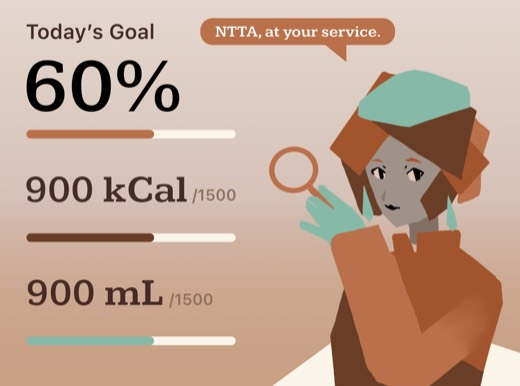
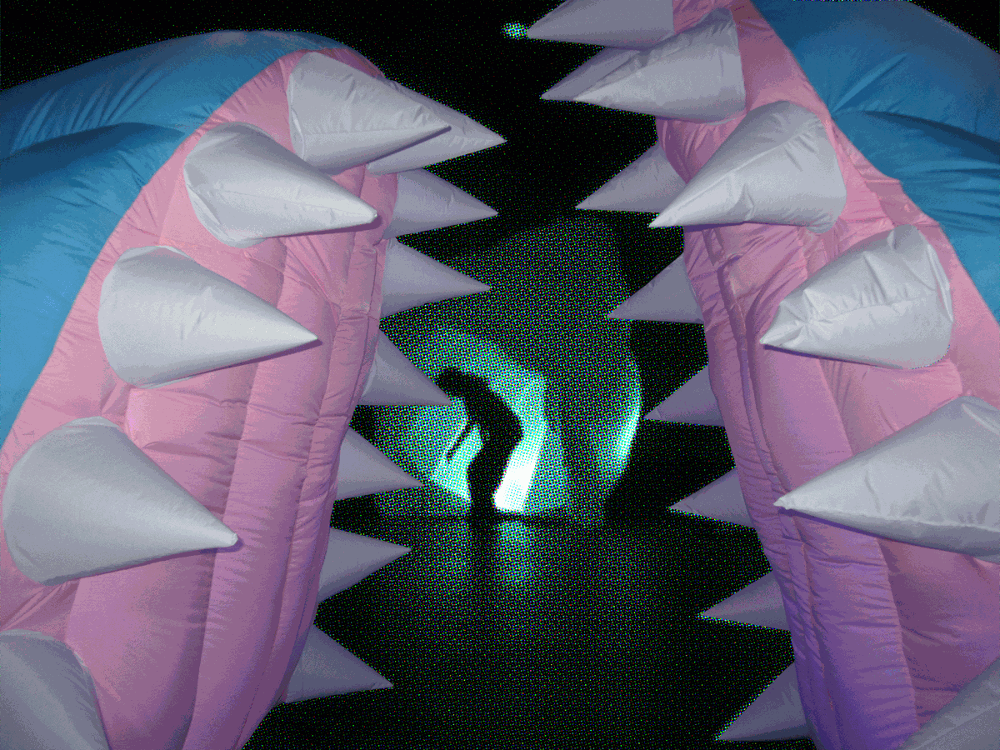
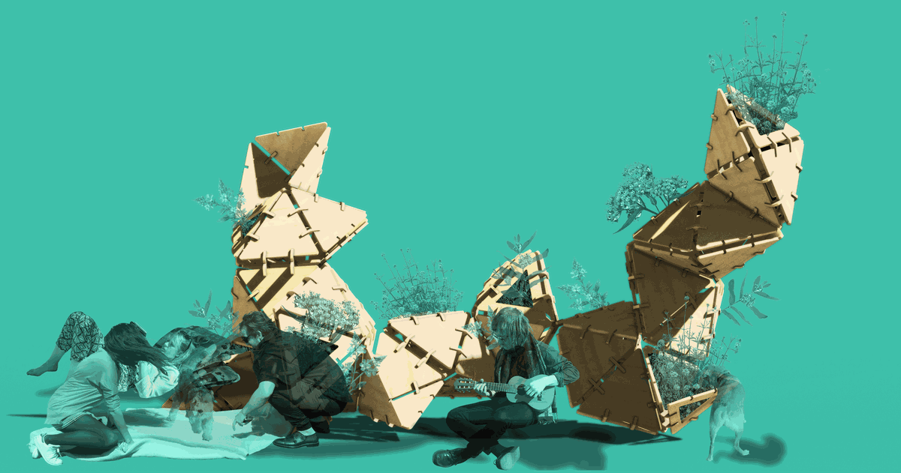
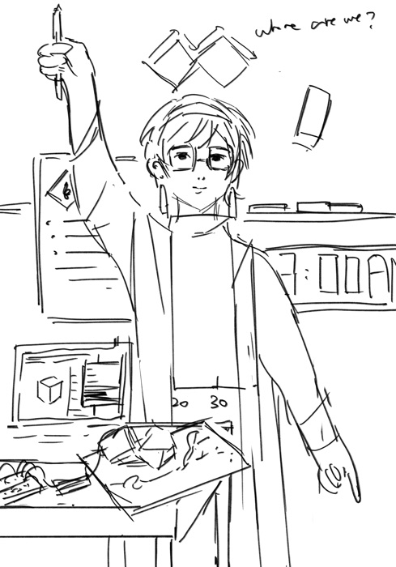

Rick's Radio
A brick-sized radio linking a mason to stations from his children's cities.
Hi, welcome to Archive Hua Tong. Hua Tong is an interdisciplinary designer who interprets the world in a tangible, analytical and simultaneously sentimental way. She makes good use of her architectural training and brings it into solving real-world problems. Here is the archive of some of her best projects.

A brick-sized radio linking a mason to stations from his children's cities.

Handheld instruments turn movement and proximity into shared sound.

A research-led request system for a student-run high school IT program.

Making the reasoning behind teacher-facing recommendations visible.

An alternate reality game interface exploring wellbeing.
Preview
A room-scale inflatable creature with sewn nylon and illuminated tentacles.

A playable archive of Pittsburgh's queer and feminist histories built from local publications.

Pollen-inspired geometry shapes CNC-routed plywood modules into a garden structure.
A parametric geometry study.
Preview
Queer History Board Game
Trace
Teacher Decision Support
Lumilo
High School IT Ticketing
STAP Ticketing System
Inflatable Spatial Installation
The Sea Monster
Pollen-Inspired Geometry
Pollen Farm

Designer Profile The Magician Shared Sound Instrument JamSesh Internet Radio Rick's RadioHover, focus, or press and hold a project to inspect its connections.